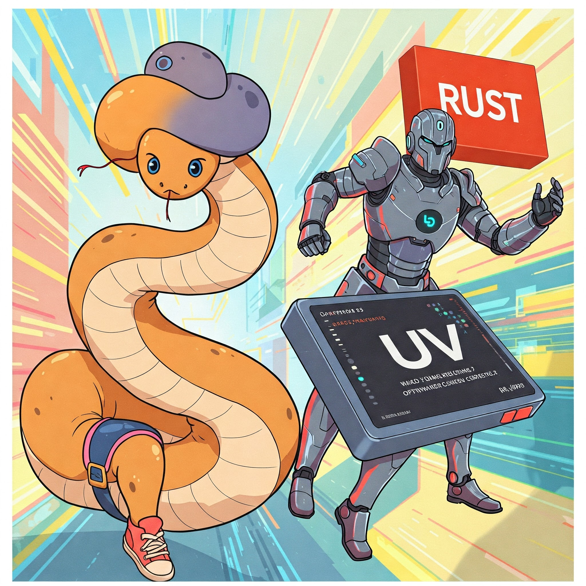

Python3 Dockerfile with uv
I’ve been noticed that my simple python3 docker image with uv has unexpected amount of downloads, so, I descided to steal some traffic from original https://docs.astral.sh/uv/guides/integration/docker/ to it page.
What is it uv?

Long story short - it’s fast-rust
python’s pip alternative. And python3 -m venv ./venv too and maybe more at time when you’re reading it.
So what?
So, don’t use none of one and two and instead of it just do properly:
ARG BASE_IMAGE=python:3.13.2-slim-bookworm
ARG UV_VERSION=0.6.1
FROM ghcr.io/astral-sh/uv:$UV_VERSION AS uv_carrier
FROM $BASE_IMAGE AS builder
COPY --from=uv_carrier /uv /uvx /bin/
RUN uv venv /opt/venv
ENV PATH=/opt/venv/bin:$PATH
COPY ./requirements.txt requirements.txt
RUN uv pip install -r requirements.txt
FROM $BASE_IMAGE
ENV PYTHONUNBUFFERED=1
ENV PATH=/opt/venv/bin:$PATH
COPY --from=builder /opt/venv /opt/venv
COPY . /opt/app
WORKDIR /opt/app
Conclusion
Personally I don’t see any reason to spent time to setup uv locally, but on CI it safe a lot of time, don’t waste it!